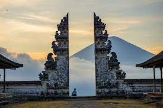

Indonesia memiliki kebudayaan yang sangat beragam dengan tradisi, seni, dan adat istiadat unik dari setiap daerah. Contohnya termasuk Batik Jawa, tari Pendet Bali, rumah adat Tongkonan Toraja, dan makanan seperti rendang dan soto.
Kebudayaan Indonesia
Tempat Wisata Terbaik di Indonesia

Candi Prambanan adalah kompleks candi Hindu terbesar di Indonesia, terletak di Yogyakarta. Didirikan pada abad ke-9 oleh Rakai Pikatan dari Dinasti Sanjaya, candi ini didedikasikan untuk Trimurti, tiga dewa utama dalam agama Hindu: Brahma (pencipta), Wisnu (pemelihara), dan Siwa (penghancur). Kompleks ini terkenal dengan arsitektur megah dan ukiran yang indah yang menggambarkan kisah epik Ramayana. Candi Siwa, yang merupakan candi utama, memiliki tinggi 47 meter dan dikelilingi oleh candi-candi lebih kecil yang semuanya menunjukkan keterampilan luar biasa dari seniman pada masa itu. Candi Prambanan juga merupakan Situs Warisan Dunia UNESCO dan merupakan salah satu tujuan wisata terpenting di Indonesia.
Hotel Favorit
Hotel Tentrem Yogyakarta
Fasilitas: Kolam renang, spa, pusat kebugaran, restoran, bar, layanan kamar, Wi-Fi gratis, parkir gratis.
Harga: Mulai dari Rp 1.750.000 per malam.
Alamat: Jl. AM Sangaji No.72A, Cokrodiningratan, Jetis, Yogyakarta.
Informasi Penting: Hotel bintang 5 dengan layanan premium, dekat dengan Malioboro dan Kraton Yogyakarta.
Gallery Prawirotaman Hotel
Fasilitas: Dua kolam renang outdoor, pusat kebugaran, restoran, bar, layanan kamar, Wi-Fi gratis, parkir gratis, fasilitas bisnis.
Harga: Mulai dari Rp 600.000 per malam.
Alamat: Jl. Prawirotaman 2 No.839 B, Brontokusuman, Mergangsan, Yogyakarta.
Informasi Penting: Terletak strategis dekat dengan restoran dan atraksi lokal, cocok untuk pasangan dan keluarga.
Ayaartta Hotel Malioboro
Fasilitas: Kolam renang, restoran, bar, layanan kamar, Wi-Fi gratis, parkir gratis, pusat bisnis.
Harga: Mulai dari Rp 480.000 per malam.
Alamat: Jl. KH Ahmad Dahlan No.123, Ngampilan, Yogyakarta.
Informasi Penting: Dekat dengan stasiun kereta dan pusat kota, menawarkan sarapan buffet harian gratis.